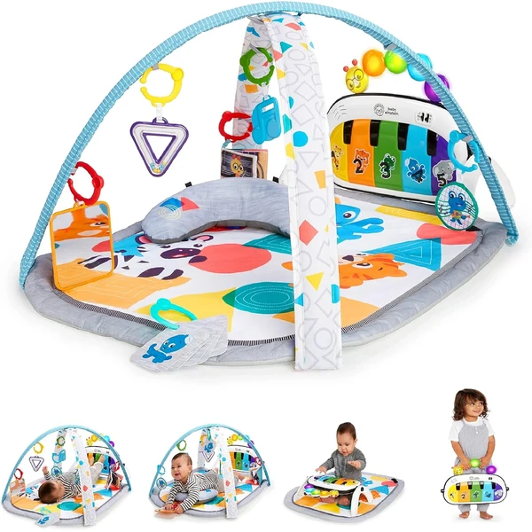

👶 6-12 meses
Baby Einstein Kickin' Tunes 4en1
Un gimnasio de actividades musical con piano interactivo, más de 70 sonidos y 25 minutos de música y luces. Se adapta a 4 modos de juego distintos: tumbado, sentado, boca abajo y portátil.
⭐
¿Por qué nos gusta?
- ✔Piano interactivo con más de 70 sonidos.
- ✔4 modos de juego: tumbado, sentado, boca abajo y portátil.
- ✔7 juguetes separables incluidos.
💬
Lo que más destacan las familias
Muchos padres coinciden en que el piano es lo que más engancha al bebé, ya que responde al tacto con sonidos y luces. Los 4 modos de uso también se valoran porque acompañan al bebé durante mucho tiempo.